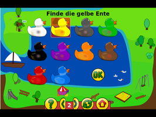

GCompris
Dieser Artikel wurde für die folgenden Ubuntu-Versionen getestet:
Ubuntu 16.04 Xenial Xerus
Ubuntu 14.04 Trusty Tahr
Zum Verständnis dieses Artikels sind folgende Seiten hilfreich:
Ein Terminal öffnen, optional
Einen Editor öffnen, optional
Archive entpacken, optional
Pakete aus dem Quellcode erstellen, optional
Root-Rechte, optional
GCompris  (vom französischen j'ai compris = ich habe verstanden) ist eine Lern- und Spielesoftware für Kinder zwischen zwei und zehn Jahren. Spielerisch erlernen unsere jüngsten Ubuntianer den Umgang mit dem Computer und erwerben Wissen in Mathematik, Informatik, Deutsch und Erdkunde. Entspannung und Kreativität kommen ebenfalls nicht zu kurz. Jeder Erfolg wird mit einer visuellen Rückmeldung belohnt.
(vom französischen j'ai compris = ich habe verstanden) ist eine Lern- und Spielesoftware für Kinder zwischen zwei und zehn Jahren. Spielerisch erlernen unsere jüngsten Ubuntianer den Umgang mit dem Computer und erwerben Wissen in Mathematik, Informatik, Deutsch und Erdkunde. Entspannung und Kreativität kommen ebenfalls nicht zu kurz. Jeder Erfolg wird mit einer visuellen Rückmeldung belohnt.
Die Software kann komplett mit der Maus gesteuert werden. Durch die leicht verständlichen Symbole finden sich auch kleine Kinder, die noch nicht lesen können, in GCompris zurecht.
Den Umfang und den Inhalt für die Software legt der Administrator fest. Sie bietet über 100 lehrreiche Aktivitäten aus unterschiedlichen Bereichen.
|  | |
| Klicke auf die richtige Farbe | Finde die Rechenschritte zum Ergebnis |
Installation¶
Paketquelle¶
Folgende Pakete müssen installiert [1] werden
gcompris (universe)
gcompris-sound-de (universe, Sprachpaket - weitere Sprachen sind verfügbar )
gnucap (universe, Schaltkreis-Simulator)
gnuchess (universe, Schach)
tuxpaint (universe, Malprogramm)
 mit apturl
mit apturl
Paketliste zum Kopieren:
sudo apt-get install gcompris gcompris-sound-de gnucap gnuchess tuxpaint
sudo aptitude install gcompris gcompris-sound-de gnucap gnuchess tuxpaint
Nach der Installation kann gcompris gestartet werden {7] oder graphisch findet man das Programm unter
"Anwendungen -> Spiele -> Bildungs-Sammlung GCompris" bzw. "Anwendungen -> Bildung -> Bildungs-Sammlung GCompris"
Der Zugang für den Administrator erreicht man über
"Anwendungen -> Spiele -> GCompris-Administration" bzw. "Anwendungen -> Bildung -> GCompris-Administration"
 | |
| Bediene eine Schleuse | Lerne etwas über den Wasserkreislauf |
Aktuelle Version kompilieren¶
In den Paketquellen findet sich keine aktuelle Version des Programms, da es sich in ständiger Entwicklung befindet. Der aktuelle Quellcode zum Kompilieren kann von sourceforge heruntergeladen und entpackt [4] werden.
Die zum Kompilieren benötigten Pakete installieren [1] [6]:
sudo apt-get build-dep gcompris
Nun wechselt man in den Ordner des Quellcodes und beginnt das Kompilieren [5] [6].
Menü¶
Die Steuerung von GCompris ist komplett auf Kinder ausgelegt und wird mit der Maus gesteuert.
Navigation¶
Die wichtigsten Schaltflächen zur Navigation:
| Navigation | |
| Schaltfläche | Beschreibung |
| Aktivität beenden und zum Menü zurückkehren. | |
| Frage wiederholen. | |
| Antwort bestätigen. | |
| Hilfe | |
Menü¶
Die Sterne zeigen an, für welche Altersgruppe ein Programm geeignet ist. Einfache Sterne beinhalten Software für die Altersgruppe von 2 bis 6 Jahren. Die komplexen Varianten sind für Kinder über 6 Jahre geeignet.
In der Standardausführung kann zwischen den folgenden Aktionen gewählt werden:
| Menü | |
| Menüpunkt | Beschreibung |
| "Entdecke den Computer" | Die Eingabe des Computers in verschiedenen Spielen kennenlernen. |
| "Gehe zu den Entdeckungsspielen" | Spielerisch Farben, Töne, die Welt ... entdecken. |
| "Puzzles" | Logik-, Gedächtnis-, Lege-, Knobel-, und Geduldsspiele. |
| "Gehe zu den Spieletafeln" | Zeitvertreib mit chatten, malen ... |
| "Mathematik" | Zählen, Rechen. und Geometriespiele. |
| "Gehe zu den Lesetafeln" | Buchstaben erlernen, Leseübungen, Galgenmännchen ... |
| "Gehe zu den Erlebnis-Aktivitäten" | Wissensvermittlung über elektrische Stromkreise, den Wasserkreislauf, die Funktionsweise einer Schleuse ... |
| "Strategiespiele" | Zeitvertreib mit Schach, Vier gewinnt, Oware und Kugelreihe. |
Administration¶
Generell gibt es zwei Stellen, an denen konfiguriert werden kann.
| Administrationstool | Startseite |
Werkzeugkiste¶
Im Programmfenster auf den Schraubenschlüssel klicken, um Einstellungen zu verändern. Dieses Menü kann vom Administrator ausgeblendet und "überschrieben" werden. In diesem Menüpunkt ist es unter anderem möglich, die Sprache zu ändern, Sound- und Musik zu deaktivieren, zwischen Vollbild- und Fenstermodus zu wechseln und das Design zu ändern.
Administrationstool¶
Das Administrationstool erleichtert, vor allem Lehrern, den Einsatz der Software im Unterricht. Um die Kinder nicht zu überfordern, sollten die einzelnen Programmpakete nach und nach freigeschaltet werden oder nur bestimmte Schwierigkeitsstufen.
| Menü | |
| Menüpunkt | Beschreibung |
| "Klassen / Benutzer" | Benutzer und Klassen anlegen. |
| "Gruppen" | Verwaltung der Gruppen und ihrer Mitglieder. |
| "Profil" | Im Zugang des Administrators können Profile angelegt und verwaltet werden. Hier werden die vorgenommenen Einstellungen unter einem Namen hinterlegt. Ihr Einsatz empfiehlt sich bei der Arbeit mit wechselnden Benutzern und Gruppen. Bei Einigen Aktivitäten können die Eigenschaften weiter angepasst werden. |
| "Tafeln" | Freigegebene Programmpakete / Aktivitäten. Hier kann die zu verwendende Sprachausgabe sowie die Kennung festgelegt werden. |
| "Berichte" | Lernkontrolle / Auswertung einzelner Gruppen oder Benutzer. |
Login¶
Kiosk Mode¶
Im Kiosk-Modus können einige Optionen deaktiviert werden, indem man GCompris mit den folgenden Parametern startet [1]:
gcompris --disable-quit --disable-config ## Deaktiviert die Schaltflächen "Beenden" und "Einstellungen"
Befehle¶
GCompris kann mit einer Reihe von Parametern gestartet werden [1]:
gcompris [Parameter]
Einige Beispiele sind in dieser Tabelle zu finden:
| Parameter | |
| Parameter | Beschreibung |
-a | Profil anlegen. |
-f | GCompris im Vollbild-Modus starten. |
-w | Startet GCompris im Fenster-Modus. |
-d | Aktivitäten mit dem angegebenen Schwierigkeitsgrad anzeigen lassen. |
--profile uus | Lädt das Profil uus |
--profile-list | Liste der verfügbaren Profile. |
-a | GCompris im Administrations-Modus |
--help | Alle verfügbaren Optionen anzeigen lassen. |
gcompris.conf¶
Die Benutzerkonfiguration von GCompris ist im Homeverzeichnis unter ~/.config/gcompris/gcompris.conf zu finden. Soll diese für alle Benutzer verwendet werden, passt man diese im Vorfeld an und speichert die bearbeitete [3][6] Version unter /etc/gcompris.conf.
Problemlösungen¶
Tux Paint¶
Hier kann es helfen, in der GCompris Administration unter der Tafel Tux Paint dessen Einstellungen aufzurufen und bei den Vollbild Optionen die Haken entsprechend den GCompris Einstellungen zu setzen und / oder das tuxpaint-config Tool entsprechend dem Wiki Artikel Tux Paint zu installieren.
Sound-Probleme unter Kubuntu¶
Obwohl Sound am System generell funktioniert, bleibt GCompris stumm. Startet man es im Terminal [2], bekommt man diese Fehlermeldung:
Mix_OpenAudio: No available audio device. : No available audio device.
Abhilfe schafft die Deaktivierung des KDE-Soundservers im KDE-Menü unter
"Kontrollzentrum -> Sound & Multimedia -> Sound-System"
Hier den Haken bei "Soundsystem aktivieren" entfernen und anwenden.
GnuChess-Fehlermeldungen (Schach-Spiele starten nicht)¶
Es gibt seit Jahren eine Inkompatibilität zwischen GCompris und dem benötigten Schach-Programm GnuChess unter Linux, wodurch
die Schach-Spiele nicht starten, sondern folgende Fehler-Meldung liefern:
Fehler: Das externe Programm gnuchess hat sich unerwartet beendet
In GCompris ist das Problem bereits gelöst (durch einbinden einer eigenen GnuChess-Version statt Aufruf des Ubuntu-Standard-GnuChess, die Lösung ist jedoch
nicht im Installations-Paket enthalten (überprüft mit Ubuntu 14.04).
Eine einfache Lösung ist bisher nicht bekannt (außer den Quell-Code runterladen und neu kompilieren)
Wie man den aktuellen Quell-Code runterlädt und kompiliert, ist im GCompris-wiki (Developer's corner) beschrieben.
Tastenkürzel¶
| Tastenkürzel | |
| Taste(n) | Beschreibung |
| Esc | Aktion beenden und zum Hauptfenster zurückkehren. |
| Strg + Q | GCompris beenden. |
| Strg + F | Umschalten zwischen Vollbild- / Fenstermodus. |
| Strg + M | Sound (de)aktivieren. |

Infobox¶
| GCompris | |
| Originaltitel: | GCompris |
| Genre: | Lernsoftware |
| Sprache: |   ... ... |
| Veröffentlichung: | 2002 |
| Entwickler: | Bruno Coudoin |
| Systemvoraussetzungen: | Pentium 3 500Mhz / 256 MB RAM |
| Strichcode / EAN / GTIN: | - |
| Läuft mit: | nativ |
- Erstellt mit Inyoka
-
 2004 – 2017 ubuntuusers.de • Einige Rechte vorbehalten
2004 – 2017 ubuntuusers.de • Einige Rechte vorbehalten
Lizenz • Kontakt • Datenschutz • Impressum • Serverstatus -
Serverhousing gespendet von